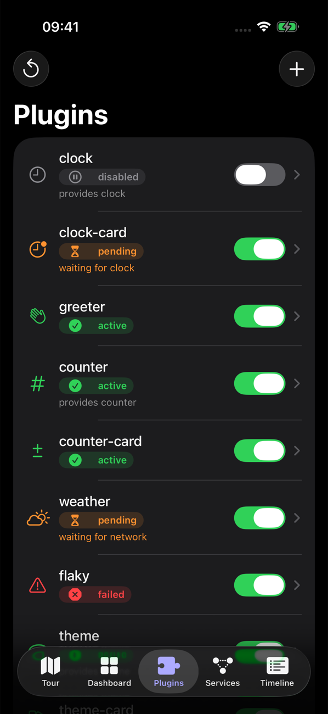
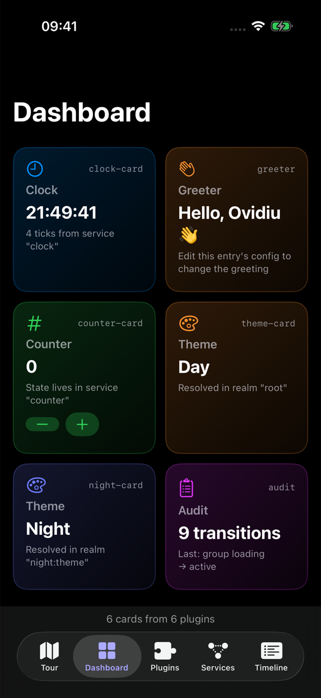
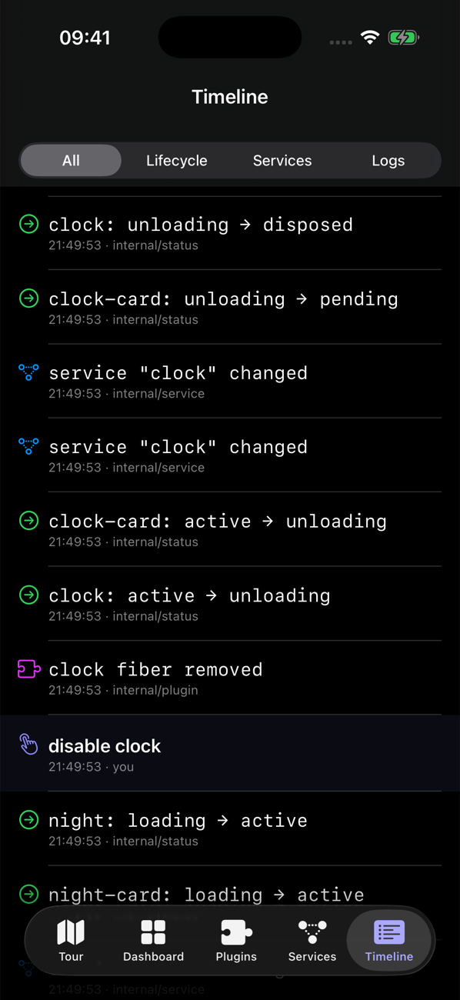

Revertible effects
Listeners, provided services, child plugins and UI contributions are effects. Unloading runs their disposers newest first, so teardown always matches setup.
Swift 6 · iOS 17+ · macOS 14+ · MIT
cordis-ios is a native Swift port of the cordis plugin framework. Plugins declare the services they need, load when those services appear, and revert every effect when they stop. No teardown code, no dangling observers.
.package(url: "https://github.com/eovidiu/cordis-ios.git", from: "0.1.0")File ▸ Add Package Dependencies… ▸ https://github.com/eovidiu/cordis-ios.gitimport Cordis
enum ClockKey: ServiceKey {
typealias Value = ClockService
static let name = "clock"
}
@CordisActor @Service(ClockKey.self)
final class ClockService {
func now() -> Date { Date() }
}
@CordisActor @Plugin
final class Greeter {
@Inject(ClockKey.self) var clock: ClockService // runs only while "clock" is provided
func apply(_ scope: EffectScope) async throws {
print("hello at \(try clock.now())")
try scope.collect { print("bye") } // undone automatically on unload
}
}
let root = Context()
let greeter = try root.plugin(Greeter.self) // pending: no clock yet
let clock = try await root.plugin(ClockService.self).await()
try await greeter.await() // active
try await clock.dispose() // greeter unloads ("bye"), back to pendingWhy cordis-ios
Feature flags, modules and extensions usually leak: an observer that outlives its screen, a service nobody unregistered. cordis makes every side effect revertible and every dependency reactive.
Listeners, provided services, child plugins and UI contributions are effects. Unloading runs their disposers newest first, so teardown always matches setup.
A plugin runs only while every service it injects is available. Withdraw a service and its consumers drop to pending; provide it again and they reload.
Run two providers of the same service side by side. A context resolves each service name in its own realm, so a subtree never sees the other's instance.
Describe the plugin tree as JSON. The Loader diffs it against what is running by id: changed configs reload, removed entries are disposed, the rest keep running.
@Plugin, @Service and @Inject generate the init, config and inject list. A plugin is a class with one apply method.
Swift 6 language mode. One global actor, CordisActor, owns contexts, fibers and listeners, so lifecycle transitions never race.
How it works
A service is a plugin that provides itself under a typed key. It is available to consumers once its fiber is active, and withdrawn the moment it unloads.
Services and injection →enum CounterKey: ServiceKey {
typealias Value = CounterService
static let name = "counter"
}
@CordisActor @Service(CounterKey.self)
final class CounterService {
private(set) var value = 0
func add(_ delta: Int) { value += delta }
}Declare what you need with @Inject. Everything apply installs, from listeners to UI, is collected and reverted when the plugin stops for any reason.
@CordisActor @Plugin
final class CounterBadge {
@Inject(CounterKey.self) var counter: CounterService
func apply(_ scope: EffectScope) async throws {
let badge = Badge(value: try counter.value)
toolbar.add(badge)
try scope.collect { toolbar.remove(badge) }
}
}Register plugins in a catalog and hand the Loader a store. Toggle, reconfigure or remove entries at runtime; it reconciles by id and saves the tree.
Loader →var catalog = PluginCatalog()
catalog.register(CounterService.self, as: "counter")
catalog.register(CounterBadge.self, as: "badge")
let loader = Loader(ctx: root, catalog: catalog,
store: FileEntryStore(url: entriesURL))
try await loader.start()
try await loader.setDisabled(id: "counter", true)
// badge drops to pending; its toolbar badge is goneEvery transition is emitted as internal/status. Full state machine →
Cordis Showcase
A SwiftUI app built entirely from plugins. A ten-step tour withdraws services, rejects configs, recovers failed plugins and isolates realms while you watch every fiber change state.



Free on the App Store for iPhone (iOS 17+). Or run it on a simulator with Examples/CordisShowcase/run.sh sim.
Contexts, fibers, effects, services, events, realms and the loader, one idea at a time.
Context, container, component and code views, plus sequence diagrams of real transitions.
Signed, per-user plugin documents managed from a server admin interface.
MIT licensed. Swift Package with the library, macros, demos and the ported test suite.
Built on research
“A Programming Paradigm for Spatiotemporal Composability”
cordis is created by Shigma and the cordiverse contributors. cordis-ios is an independent Swift port that follows cordis 4.0 and ports its test suite; it is not affiliated with or endorsed by the cordis authors.